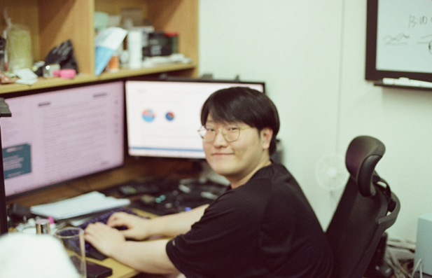

Carbon nanomaterials
탄소나노튜브 및 그래핀계 소재
CNT 및 나노탄소 소재의 분산·응집과 전기적 응답 연구. 저차원 나노카본의 열관리 관련 연구.
CNT · 나노소재 분산 · 전기적 측정
GACHON UNIVERSITY · MATERIALS RESEARCH
가천대학교 · 신소재공학 박사과정 수료

가천대학교에서 신소재공학을 연구하는 박사과정 연구자입니다. 나노탄소와 고분자 복합소재의 분산·계면 및 공정과 물성의 관계, LiDAR 센서의 성능평가와 시험절차를 연구하고 있습니다.
RESEARCH PORTFOLIO
나노탄소와 고분자 복합소재의 구조·계면에서 전기적·열적·음향적 응답까지.
Carbon nanomaterials
CNT 및 나노탄소 소재의 분산·응집과 전기적 응답 연구. 저차원 나노카본의 열관리 관련 연구.
CNT · 나노소재 분산 · 전기적 측정
Polymer composites
PVA/PEDOT:PSS–GO/MoS₂ 복합소재와 전기방사 공정 연구. Raman mapping을 활용한 소재 균일성·구조 및 계면 분석.
PVA · PEDOT:PSS · GO · MoS₂
Energy materials
이오노젤과 리튬전지 관련 연구. 고분자 복합소재의 계면과 물성에 대한 연구 경험.
이오노젤 · 리튬전지 · 고분자 복합소재
CARBON NANOMATERIALS · IN SITU SPECTROSCOPY
단일벽 탄소나노튜브의 분리 과정을 미세유체 장치와 in situ Raman spectroscopy로 관찰하는 연구입니다.
GRAPHENE COMPOSITES · ACOUSTIC MATERIALS
그래핀 산화물–PEI 다공성 폼의 구조와 고주파 영역의 흡음 특성을 연결하는 연구입니다.
NANOMESH ELECTRODES · THERMAL MANAGEMENT
섬유형 메쉬와 탄소나노튜브를 활용한 유연 전극 및 방열 구조를 연구합니다.
IONOGEL FIBERS · ELECTROCHEMICAL ENERGY STORAGE
이온겔 기반 섬유형 에너지 저장 소재의 제작과 구조·전기화학 특성을 살펴보는 연구입니다.
RESEARCH EXPERIENCE
소재 제작과 분석, 센서 성능평가 및 시뮬레이션으로 이어지는 연구 경험.
LIDAR METROLOGY · ROBOTICS
펄스형 ToF와 FMCW LiDAR의 측정 특성을 평가하고, 로봇 실험 및 모델 시각화와 함께 연구 경험을 제시합니다.
Materials R&D
나노탄소와 고분자 복합소재의 분산·응집 및 계면 특성 연구. 소재의 구조와 전기적 응답, 물성 간 관계 분석.
나노소재 분산 · 복합소재 · 계면 분석
Process R&D
전기방사 기반 복합소재 공정 연구. CVD, PVD, Photolithography를 활용한 소재 제작 및 공정 경험.
Electrospinning · CVD · PVD · Photolithography
Characterization
Micro-Raman spectroscopy와 Raman mapping을 통한 구조·균일성 분석. Photoluminescence, SEM, UV–vis 및 Potentiostat/Galvanostat 활용 분석 경험.
분광 분석 · 구조 분석 · 전기화학 분석
Sensor testing
펄스형 ToF와 FMCW LiDAR의 기초 성능평가 및 측정 원리별 표준화 시험절차 연구. 변위·거리·공간분리와 거리·속도 출력특성, 분석 조건 및 측정 모드에 따른 차이 평가.
ToF/FMCW LiDAR · 성능평가 · 시험절차
Simulation
CFD 및 VASP를 활용한 시뮬레이션 경험.
CFD · VASP
신소재공학 박사과정 수료 | GPA 4.13/4.5
신소재공학 석사과정 | GPA 4.44/4.5
에너지IT학과 학사 | GPA 3.84/4.5
게재연도순 정렬 · IF 및 JCR은 2025년 지표 기준
상위 비율 = 분야 내 JIF 순위 ÷ 해당 분야 학술지 수 × 100
게재 2026 · 공저자 · Review
Byeongji Beom, Man-Ki Moon, Jun-Hyeong Jung, Seung-Chan Jung, Eou-Sik Cho, Keun-A Chang, Jae-Hee Han
Polymers | IF : 5.8, JCR : Q1(상위 18.75%)
2026, 18(11), 1365
2025 JIF/JCR · Polymer Science
게재 2025 · 공동제1저자
Byeongji Beom, Seung-Chan Jung, Wonjun Jang, Jong-Keon Won, Jihoon Jeong, Yu-Jeong Choi, Man-Ki Moon, Jae-Hee Han
Polymers | IF : 5.8, JCR : Q1(상위 18.75%)
2025, 17(1), 93
2025 JIF/JCR · Polymer Science
게재 2025 · 공저자
Phan Gia Le, Seung-Chan Jung, Jae-Hee Han, Sungbo Cho
Microchemical Journal | IF : 5.2, JCR : Q1(상위 24.55%)
2025, 213, 113895
2025 JIF/JCR · Chemistry, Analytical
게재 2024 · 공동제1저자 · 첫 번째 기재 저자
Seung-Chan Jung, Wonjun Jang, Byeongji Beom, Jong-Keon Won, Jihoon Jeong, Yu-Jeong Choi, Man-Ki Moon, Eou-Sik Cho, Keun-A Chang, Jae-Hee Han
Polymers | IF : 5.8, JCR : Q1(상위 18.75%)
2024, 16(21), 2983
2025 JIF/JCR · Polymer Science
게재 2024 · 공저자
Young Woo Kim, Seojin Kim, Chaeyeong Lee, Joo Hyun Jeong, Yun Hyeok Jeong, Yuhwa Bak, Seo Hyeon Kim, Sung Jin Park, Ko Eun Ham, Doeun Lee, Junpyo Song, Youngjin Song, Seung-Chan Jung, Oh Kwan Kwon, Jae-Hee Han, Sang Jik Kwon, Eou-Sik Cho, Yongmin Jeon
Micromachines | IF : 3.5, JCR : Q2(상위 37.04%)
2024, 15(12), 1518
2025 JIF/JCR · Instruments & Instrumentation
게재 2026 · 제1저자 · KCI 등재
정승찬, 정준형, 원종건, 문만기, 범병지, 장원준, 한재희
표준인증안전학회지 | IF : 해당 없음, JCR : 해당 없음
2026, 16(3), 45–62
Clarivate JIF/JCR 기준
게재 2022 · 공저자
장원준, 이남종, 정다운, 김홍석, 정승찬, 한재희
전기전자재료학회논문지 | IF : 해당 없음, JCR : 해당 없음
2022, 35(4), 342–347
Clarivate JIF/JCR 기준
발명자: 이정훈, 이정우, 한재희, 정승찬, 장원준, 정지훈, 원종건, 최유정, 범병지
출원인: 주식회사 캐어, 가천대학교 산학협력단
출원 10-2024-0062696 | 2024-05-13
등록 10-2934620 | 2026-02-27 · 공고 2026-03-05
발명자: 한재희, 김대윤, 정승찬
출원인: 가천대학교 산학협력단
출원 10-2024-0122412 | 2024-09-09
등록 10-2931869 | 2026-02-23 · 공고 2026-02-25
발명자: 한재희, 김홍석, 정승찬, 범병지, 정지훈
출원인: 가천대학교 산학협력단
출원 10-2024-0077633 | 2024-06-14
공개 10-2025-0177194 | 2025-12-23
발명자: 한재희, 정승찬, 이준섭
출원인: 가천대학교 산학협력단
출원 10-2022-0155236 | 2022-11-18
CVD, PVD, Photolithography, Electrospinning
Micro-Raman spectroscopy, Raman mapping, Photoluminescence spectroscopy, SEM, UV–vis
Potentiostat/Galvanostat 활용 분석, 전기적 측정, ToF/FMCW LiDAR 성능평가
CFD, VASP
가천대학교 경영윤리와 사회적책임연구소장
Zero Energy Building과 미세먼지 저감을 위한 Zero Dust Building 구상 및 시장성 인터뷰.
과학기술정보통신부
탄소나노소재 기반 정전용량 변화 검지형 RFID 웨어러블 탐지센서 스티커 모듈의 시장성 평가.
부총리 겸 교육부장관상
고감도 실시간 미세먼지 탐지를 위한 탄소나노소재 기반 RFID 웨어러블 탐지센서 스티커 모듈 개발.
가천대학교 교수학습개발센터
2017학년도 2학기 에너지재료공학 스터디 그룹 활동.
가천대학교 창조융합원
골전도 선글라스와 LoRa·Bluetooth 통신기술을 융합한 웨어러블 기기 프로젝트.
한국전력공사
M2G(Material to Grid) 프로젝트: 신소재 기반 제어소자 도입에 따른 전력 절감량 Excel 시뮬레이션.
가천대학교
IoT 기술을 활용한 총기 내 잔탄량 검사 프로젝트.
가천대학교
초등학생 학업 상담 및 수업 지도 지원.
가천대학교
종합격투기 동아리 활동 및 타 전공 학생들과의 교류.
한국연구재단 · 과학기술정보통신부
연구주제 기반 창업 아이템 발굴, 전문가 피드백 및 미국 워싱턴 대학 협업 프로그램 참여. 귀국 후 아이템 설계·디자인·모듈화 및 발표.
가천대학교
외국인 학생의 학업 상담, 시간표 작성 및 생활 적응 지원.
가천대학교
초등학생·중학생 대상 신소재·에너지 분야 질의응답 및 실험 체험 지원.
가천대학교 에너지IT학과
학부생 학습 및 교수자 수업 진행 지원.
가천대학교 교수학습개발센터
에너지재료공학 스터디 활동.
가천대학교 에너지IT학과
학부생 학습 및 교수자 수업 진행 지원.
실험실 창업 교육, 고객 인터뷰 및 기업가정신 학습.
가천대학교 창조융합원. 전공 융합 설계를 통한 신재생에너지의 단위면적당 전환 효율 개선 구상.
가천대학교 에너지 인력양성센터 해외 답사 프로그램 참여.
TOEIC Speaking Level 6 | 2019.12 취득 이력